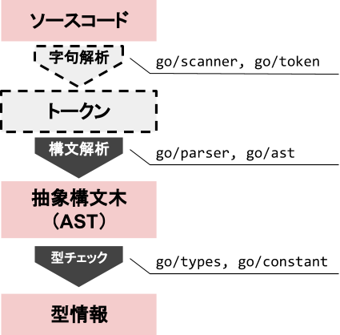
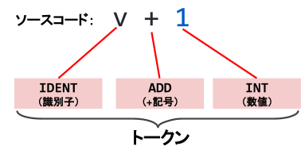
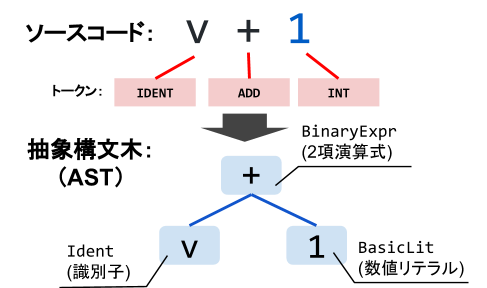
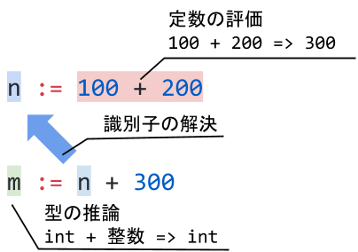

このコードラボでは、Goのソースコードの静的解析を扱います。静的解析を行うことにより、自作のコードチェッカーやリファクタリングツールを作ることができます。
静的解析はいっけん難しそうに感じますが、Goの標準パッケージには、静的解析を行うためのgoパッケージがあり、詳しい知識がなくても簡単に静的解析が行えるようになっています。
このコードラボが終わる頃には、ソースコードをパースして抽象構文木（AST）を構築し、型チェックによって変数の定義位置や使用している位置などを解析することができるようになります。
まずはGitHubからこのコードラボで使うサンプルコードをダウンロードしましょう。git cloneするか、ZIPでダウンロードして解凍しましょう。
$ git clone https://github.com/golangtokyo/codelab.git
なお、このコードラボのサンプルコードはfind-gophers以下に入っています。
$ cd codelab/find-gophers $ ls 1_parseexpr 2_parsefile 3_typechek README.md
Gopherをさがせ！
右のキャラクターはGoのマスコットキャラクターのGopherです。Renée Frenchさんによって生み出されたキャラクターで、右の画像はGopherizeというサービスを使って作ったものです。 Gopherizeを使えば、いろんな種類のGopherを作ることができます。 さて、下の図にはたくさんのGopherがいますが、右のGopherはどこにいるでしょうか？ |
|

見つけられましたか？中央よりすこし左側にいますね！簡単でしたか？
ではこちらはどうでしょうか？ソースコードの中からGopherを探してみましょう。
ソースコードからGopherをさがせ！
package main
import (
"fmt"
)
type Gopher struct {
Gopher string `json:"gopher"`
}
func main() {
const gopher = "GOPHER"
gogopher := GOPHER()
gogopher.Gopher = gopher
fmt.Println(gogopher)
}
func GOPHER() (gopher *Gopher) {
gopher = &Gopher{Gopher: "gopher"}
return
}これも簡単です。grepコマンドを使えば文字列の検索は簡単に行えることはご存知でしょう。実際grepコマンドで調べると6箇所見つかりました。
$ grep Gopher _gopher.go
type Gopher struct {
Gopher string `json:"gopher"`
gogopher.Gopher = gopher
func GOPHER() (gopher *Gopher) {
gopher = &Gopher{Gopher: "gopher"}
Gopher型をさがせ！
では、Gopherという文字列ではなく、Gopher型を検索したい場合どうすればよいでしょうか？grepコマンドで調べたもののうち、フィールドのGopherなどを除外すると、該当箇所は次の3箇所になります。
package main
import (
"fmt"
)
type Gopher struct { // ここ
Gopher string `json:"gopher"`
}
func main() {
const gopher = "GOPHER"
gogopher := GOPHER()
gogopher.Gopher = gopher
fmt.Println(gogopher)
}
func GOPHER() (gopher *Gopher) { // ここ
gopher = &Gopher{Gopher: "gopher"} // ここ
return
}文字列で検索するだけでは、この3箇所に絞ることは不可能です。grepコマンドでは、入力されたファイルをGoのソースコードだということを理解できないためです。
与えられたファイルをGoのソースコードだと解釈し、Gopher型が用いられている場所を検索するには静的解析が必要になります。
静的解析とは、プログラムを実行せずに解析することをいいます。ソースコードを入力とし、ソースコードの構造や型情報などを解析することができます。
一方、プログラムを実行して解析を行うものとして、動的解析があります。動的解析の例として、並行処理におけるデータ競合の検出器（go test -raceなど）やリフレクションがあります。
静的解析を行うとどんなメリットがあるのでしょうか？ソースコードを解析することで、さまざまな情報を得ることができ、それを用いると開発支援ツールを作ることができます。実際に、Goによる開発でよく用いられる表1のようなツールでも静的解析が用いられています。
表1：Goの開発支援ツール
|
|
| コードフォーマッタ |
| コードチェッカー、リンター |
| コード理解ツール |
| コード補完ツール |
| 適切なエラー処理をチェックする |
| リファクタリングツール |
Goは静的解析をとても簡単に行うことができる言語です。文法がシンプルで静的型付け言語、暗黙の型変換などを行わないなどの特徴を持っているからです。そして、何より標準パッケージとして静的解析を行うためのパッケージであるgoパッケージが存在するからです。
goパッケージは、表2のようなサブパッケージから構成されています。
表2：goパッケージのサブパッケージ
|
|
| 抽象構文木（AST）に関わる型や関数を提供 |
| パッケージに関する情報を集める |
| 定数に関する型を提供 |
| ドキュメントを抽象構文木（AST）から取り出す |
| コードフォーマッタの機能を提供 |
| コンパイラに適したImporterを提供 |
| 構文解析の機能を提供 |
| 抽象構文木（AST）の表示機能を提供 |
| 字句解析の機能を提供 |
| トークンに関する型を提供 |
| 型チェックに関する機能を提供 |
静的解析は図1のような流れで行われます。それぞれのフェーズを右に記載してあるパッケージが担当しています。

図1: 静的解析の流れ
まずは、入力として与えられたソースコードを字句解析というフェーズでトークンに分割します。字句解析で、文字列の塊だったソースコードが予約語のfuncなのか、識別子（変数名や関数名など）なのか、数値リテラルなのかなどを区別することができるトークンの塊に変換されます。
なお、goパッケージを使う場合、go/parserパッケージが内部で字句解析を行うため、直接字句解析を行うことはあまりありません。そのため、図1では字句解析のフェーズが点線で描かれています。

図2：字句解析
次に、トークンを基に構文解析を行い、トークンを抽象構文木と呼ばれるGoの構文を表現する木構造のデータに変換します。構文解析を行うと、どの部分が関数定義で、どの部分がその引数の定義なのか、などを抽象構文木から取得することができるようになります。

図3：構文解析
そして最後に型チェックを行うことで、抽象構文木から型情報を抽出します。型チェックは次の3つの工程から成ります。
- 識別子の解決
- 型の推論
- 定数の評価
この3つの工程を行い、型情報を抽出することで、どの変数（識別子）がどういうデータ型でどこで定義され、どこで使用されているかなどを知ることができます。

図4：型チェック
静的解析の流れを学んだところで、次から実際にGoのソースコードを静的解析してみましょう。
構文解析を行う関数
まずは構文解析を行いましょう。go/parserパッケージを用いれば、ソースコードから抽象構文木を取得することができます。なお、前述のとおり、字句解析についてはgo/parserパッケージ内でgo/scannerパッケージを用いて行われています。
go/parserパッケージでは、表3のようなParseで始まる関数がいくつか用意されています。
表3：go/parserパッケージで提供されている構文解析を行う関数
|
|
|
|
|
|
| ファイル単位でソースコードを構文解析する |
| ディレクトリ内のGoファイルを |
式の構文解析
最初に式を構文解析してみましょう。1_parseexprというディレクトリにあるmain.goをみてみると、次のようになっています。
package main
import (
"go/ast"
"go/parser"
"log"
)
func main() {
// 式をパースする
expr, err := parser.ParseExpr("v + 1")
if err != nil {
log.Fatal("Error:", err)
}
// v + 1の抽象構文木(AST)を表示する
ast.Print(nil, expr)
}parser.ParseExpr("v + 1")でv + 1という式だけで構成されたソースコードを構文解析し、抽象構文木を取得しています。取得した抽象構文木をast.Print関数を用いて出力しています。このコードを実行すると、次のように出力されます。
$ cd 1_parseexpr
$ go run main.go
0 *ast.BinaryExpr {
1 . X: *ast.Ident {
2 . . NamePos: 1
3 . . Name: "v"
4 . . Obj: *ast.Object {
5 . . . Kind: bad
6 . . . Name: ""
7 . . }
8 . }
9 . OpPos: 3
10 . Op: +
11 . Y: *ast.BasicLit {
12 . . ValuePos: 5
13 . . Kind: INT
14 . . Value: "1"
15 . }
16 }
v + 1にparser.ParseExprを実行すると、2項演算式を表す*ast.BinaryExprをルートノードとした抽象構文木（AST）になります。*ast.BinaryExprは2つの項を子ノードとして持ち、それぞれXとYという名前のフィールドとして保持されています。
第1項を表すXは、*ast.Identという識別子（変数名や関数名など）を表す型のノードです。識別子の名前はNameフィールドに、識別子の位置はNamePosフィールドに保持されます。Objフィールドには識別子の種類（変数や関数）が入りますが、構文解析では式だけだとそれが判断できないため、Badが入っています。
第2項を表すYは、*ast.BasicLitというリテラルを表す型のノードです。リテラルとは、"hoge"などの文字列リテラルや123などの数値リテラルを表します。Kindフィールドには、リテラルの種類である、token.INTやtoken.STRINGなどの値が入ります。Valueフィールドには、リテラルの値が種類に問わず文字列で入っています。token.INTの場合は、strconv.Atoiなどで文字列からint型に変換して利用します。token.STRINGの場合は"\"hoge\""のように、ダブルクォートでさらに囲まれているため、strcov.Unquoteでダブルクォートを外してやる必要があります。
このように、構文解析をし、抽象構文木（AST）を得ることで、ソースコードを構造的に扱うことができるようになります。抽象構文木（AST）のノードはast.Nodeというインタフェースで統一的に扱われています。しかし、実際にはそれぞれのノードは*ast.BinaryExprや*ast.Identのように具象型で表され、それぞれのフィールドやメソッドからさまざまな情報が取得できます。抽象構文木（AST）のノードを表す型に、どのようなものが存在するか知るためには、go/astパッケージのAPIドキュメントで確認すると良いでしょう。
ファイルの構文解析
続いてファイル単位で構文解析を行ってみましょう。2_parsefileというディレクトリにあるmain.goをみてみると、次のようになっています。
package main
import (
"fmt"
"go/ast"
"go/parser"
"go/token"
"log"
)
func main() {
// ファイルごとのトークンの位置を記録するFileSetを作成する
fset := token.NewFileSet()
// ファイル単位で構文解析を行う
f, err := parser.ParseFile(fset, "_gopher.go", nil, 0)
if err != nil {
log.Fatal("Error:", err)
}
// 抽象構文木を深さ優先で探索する
ast.Inspect(f, func(n ast.Node) bool {
// 識別子ではない場合は無視
ident, ok := n.(*ast.Ident)
if !ok {
return true
}
// 識別子がGopherという名前でなければ無視
if ident.Name != "Gopher" {
return true
}
fmt.Println(fset.Position(ident.Pos()))
return true
})
}このコードは"ソースコードからGopherをさがせ！"で挙げたソースコードの中からGopherという文字列が識別子として現れた場所を表示します。実行すると次のような結果が出力されます。なお、各行ソースコード名:行数:バイト数の順で場所が表示されています。
$ cd 2_parsefile $ go run main.go _gopher.go:7:6 _gopher.go:8:2 _gopher.go:14:11 _gopher.go:18:24 _gopher.go:19:12 _gopher.go:19:19
この結果、Gopherという識別子が6箇所で現れていることが分かります。それでは具体的にどのように解析を行っているのか見ていきましょう。
まずは、*token.FileSetという、トークンの位置を記録するための型のfsetという変数を生成しています。*token.FileSet型の値は、parser.ParseExprFromやparser.ParseFileの第1引数に出力引数として渡すことで、内部で行われる字句解析の際に各トークンのファイル上の位置（どのファイルの何行目の何バイト目か）を記録してくれます。そうすることで、トークンの位置をint型をベースにした、token.Pos型という整数型で扱うことができ、複数のファイルにまたがって、一意にトークンの位置を表現できます。整数で表された値は、*token.FileSet型のPositionメソッドを呼び出すことで、token.Position型に変換することができます。token.Position型からは、ファイル名は行数などが取得することができます。
次に、parser.ParseFileでファイル単位でソースコードの構文解析を行っています。この関数の引数は4つあり、第1引数はトークンの位置を記録するための*token.FileSet、第2引数はファイル名、第3引数はソースコードの値、第4引数が構文解析のモードです。第3引数の型はinterface{}であり、nilの場合には、第2引数で指定したファイル名を利用し、構文解析を行います。第3引数にio.Readerや文字列、バイトスライスが指定された場合は、それらをソースコードとして構文解析します。ここでは、ソースコードからGopherをさがせ！で挙げたソースコードを_gopher.goとして保存し、それを構文解析しています。第4引数のモードでは、コメントも含めて構文解析を行うparser.ParseCommentsなどのモードが指定できます。ここではデフォルトのモードを使いたいため、0を指定しています。parser.ParseFileを実行すると、ファイルを表す抽象構文木（AST）のノードである、*ast.File型の値が取得されます。
最後に取得した*ast.File型の値をルートノードとして、深さ優先で探索を行っています。ast.Inspectは第1引数で与えられたノードをルートノードとして、各ノードを探索し、第2引数で渡されたfunc(ast.Node) bool型の関数を適用していきます。この関数の引数は各ノードの値で、戻り値はそのノードの子ノードを探索するかどうかを表します。戻り値がtrueの場合には、子ノードを探索し、falseの場合は探索をやめ、親のノードの処理に戻ります。この場合、各ノードが*ast.Ident以外の場合は無視をし、*ast.Identの場合は名前がGopherであるかチェックしています。名前がGopherの場合は、*token.FileSet型のPositionメソッドでノードの位置をtoken.Position型に変換し、標準出力に出力しています。
このように、構文解析を行うことで抽象構文木（AST）から識別子などの情報を取得できることが分かりました。しかし、これだけでは識別子が型なのか変数なのか、フィールドなのか完全に区別することはできません。実際に、2_parsefile/main.goを実行した結果は、次の6箇所を指していますが、型だけではなくフィールドも混じっています。
type Gopher struct {
Gopher string `json:"gopher"`
gogopher.Gopher = gopher
func GOPHER() (gopher *Gopher) {
gopher = &Gopher{Gopher: "gopher"}最初の目的を思い出すと、ソースコード中のGopher型を参照している部分の抽出なのでこれでは不十分です。そこで、次に構文解析に加えて型チェックを行うことでより絞り込んで行きましょう。
最後に型チェックを行うことでGopherという名前の識別子が型として用いられている部分だけに絞り込んでいきましょう。3_typeckeckというディレクトリにあるmain.goをみてみると、次のようになっています。
package main
import (
"fmt"
"go/ast"
"go/importer"
"go/parser"
"go/token"
"go/types"
"log"
)
func main() {
// ファイルごとのトークンの位置を記録するFileSetを作成する
fset := token.NewFileSet()
// ファイル単位で構文解析を行う
f, err := parser.ParseFile(fset, "_gopher.go", nil, 0)
if err != nil {
log.Fatal("Error:", err)
}
// 識別子が定義または利用されてる部分を記録する
defsOrUses := map[*ast.Ident]types.Object{}
info := &types.Info{
Defs: defsOrUses,
Uses: defsOrUses,
}
// 型チェックを行うための設定
config := &types.Config{
Importer: importer.Default(),
}
// 型チェックを行う
_, err = config.Check("main", fset, []*ast.File{f}, info)
if err != nil {
log.Fatal("Error:", err)
}
// 抽象構文木を深さ優先で探索する
ast.Inspect(f, func(n ast.Node) bool {
// 識別子ではない場合は無視
ident, ok := n.(*ast.Ident)
if !ok {
return true
}
// 識別子がGopherという名前でなければ無視
if ident.Name != "Gopher" {
return true
}
// 識別子が定義または利用されている部分の情報を取得
obj := defsOrUses[ident]
if obj == nil {
return true
}
// 型情報を取得し名前付き型でなければ無視
typ := obj.Type()
if _, ok := typ.(*types.Named); !ok {
return true
}
fmt.Println(fset.Position(ident.Pos()))
return true
})
}このコードを実行すると次のような結果が得られます。構文解析だけを行った結果より絞り込まれていることが分かります。6箇所から3箇所まで絞り込まれています。
$ cd 3_typecheck $ go run main.go _gopher.go:7:6 _gopher.go:18:24 _gopher.go:19:12
実際に確認してみると、次の3箇所になります。どこもGopherを識別子として使用しているだけではなく、型として使用していることが分かります。
type Gopher struct { // ここ
func GOPHER() (gopher *Gopher) { // ここ
gopher = &Gopher{Gopher: "gopher"} // ここ（フィールドは除く）さて、実行結果を見たところで3_typeckeck/main.goで具体的に何が行われているか見ていきましょう。構文解析を行っている部分は、2_parsefile/main.goとほとんど同じです。diffを取ってみると、型チェックを行う処理が追加されていることが分かります。
$ diff 2_parsefile/main.go 3_typecheck/main.go
5a6
> "go/importer"
7a9
> "go/types"
20a23,40
> // 識別子が定義または利用されてる部分を記録する
> defsOrUses := map[*ast.Ident]types.Object{}
> info := &types.Info{
> Defs: defsOrUses,
> Uses: defsOrUses,
> }
>
> // 型チェックを行うための設定
> config := &types.Config{
> Importer: importer.Default(),
> }
>
> // 型チェックを行う
> _, err = config.Check("main", fset, []*ast.File{f}, info)
> if err != nil {
> log.Fatal("Error:", err)
> }
>
34a55,66
> // 識別子が定義または利用されている部分の情報を取得
> obj := defsOrUses[ident]
> if obj == nil {
> return true
> }
>
> // 型情報を取得し名前付き型でなければ無視
> typ := obj.Type()
> if _, ok := typ.(*types.Named); !ok {
> return true
> }
>
まずはじめに、*types.Info型の値を作成しています。これは型チェックを行った結果を保持するための出力引数として用いられます。types.Info型の定義は次のようになっています。各フィールドの細かな定義はAPIドキュメントを参照することをオススメしますが、よく用いるのはDefsとUsesです。Defsは識別子の定義されている箇所の情報を、Usesは識別子が使われている箇所の情報が記録されます。
type Info struct {
Types map[ast.Expr]TypeAndValue
Defs map[*ast.Ident]Object
Uses map[*ast.Ident]Object
Implicits map[ast.Node]Object
Selections map[*ast.SelectorExpr]*Selection
Scopes map[ast.Node]*Scope
InitOrder []*Initializer
}ここでは、DefsもUsesも区別する必要がないため、defsOrUsesという名前のマップをDefsとUsesに設定しています。
次に、型チェックを行うために必要な設定を*types.Config型の値として作成しています。ここでは特に特別な設定は必要ないですが、Importerフィールドだけは必要なため、デフォルトのimporter.Default関数で返される値を設定しています。Importerフィールドで設定した値は、型チェックを行うソースコード中に現れるimport文から依存するパッケージの情報を取得するために用いられます。また、デフォルトのImporterは通常のGOROOTやGOPATHを元にimport文を解決します。
そして、*types.Config型のCheckメソッドを呼ぶことで型チェックを行っています。Checkメソッドは4つの引数を取ります。第1引数は、型チェックを行うパッケージのインポートパスです。ここではmainとしています。第2引数は、字句解析時に記録したトークンの位置を保持した*token.FileSet型の値です。第3引数は、構文解析を行った結果であるファイル単位の抽象構文木のスライスです。パッケージは複数のファイルから構成されるため、第3引数は*ast.File型のスライスになっています。第4引数は、型チェックの結果を保持するために利用される*types.Info型の値で出力引数となります。
最後に、ast.Inspect関数の第2引数で渡す関数の中で型チェックの結果を用いています。identには識別子を表すノードが入っているため、まずはこれをキーにしてdefsOrUsesから対応する情報があるか調べています。キーが存在する場合、types.Object型の値がマップから取得できます。この値を基に識別子の情報を詳しく調べていきます。
types.Objectはインタフェースで、変数や型、関数などを表します。Typeメソッドを呼び出すことで、そのオブジェクトに対応する型が取得できます。Typeメソッドが返すtypes.Type型もインタフェースです。このインタフェースを実装した型として、int型やstring型などを表すtypes.Basic型やインタフェースを表すtypes.Interface型、typeキーワードで型定義を行って定義された型（ユーザ定義型）を表すtypes.Named型などがあります。
ここでは、Gopher型を参照している部分を探したいので、Typeメソッドで取得した値がtypes.Named型であるかをチェックしています。最終的には、識別子でかつ名前がGopherであり、ユーザ定義型であるものを出力していることになります。
このように、型チェックを行うことで構文解析だけでは取得できない型に関数情報などを取得することができ、より精度の高い情報を知ることができます。ここではユーザ定義型のGopherであることまでしかチェックしませんでしたが、型が定義されたスコープなども絞り込む条件に追加することもできます。
このコードラボでは、ソースコードを静的解析することで、識別子の位置や型情報などを取得する方法を解説しました。このコードラボで扱った内容だけでも多くのことをソースコードから得られることができ、自作の開発ツールに活かせることでしょう。
このコードラボでは単一のソースコードしか扱いませんでしたが、go/buildパッケージ（Go1.11からはgolang.org/x/tools/go/pacakgeパッケージ）などを使うとパッケージで使われているソースコードすべてに対して構文解析や型チェックを行ったりもします。ぜひ、標準パッケージであるgoパッケージや順標準パッケージであるgolang.org/x/tools/goパッケージの機能を覗いてみてください。今までgrepやsedを使ってソースコードをテキストファイルとして扱ってきた作業が、静的解析でGoのソースコードとして扱うことで、もっと賢く、精度も高く行えることに気づくでしょう。